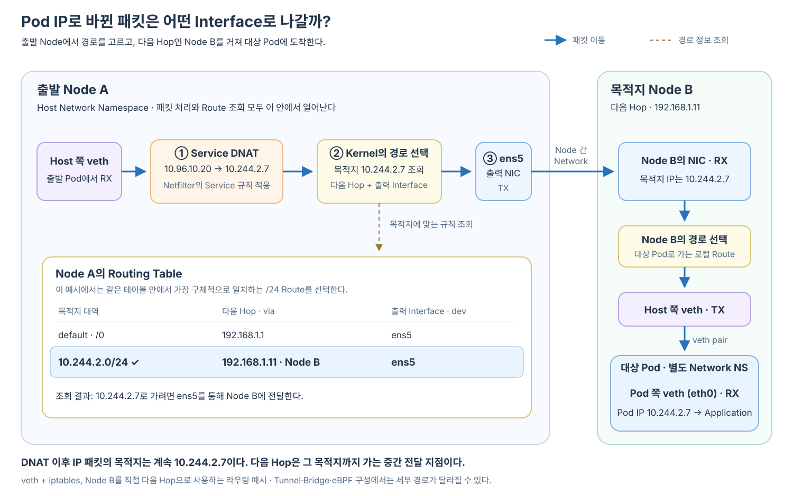

Routing Table은 Linux Kernel이 목적지 IP로 Packet을 보내기 위해 어떤 출력 Interface와 다음 경로를 사용할지 판단할 때 보는 규칙 목록이다.
Application은 목적지 IP와 Port를 지정하지만 일반적으로 eth0, 물리 NIC나 Tunnel Interface를 직접 선택하지 않는다. Kernel이 현재 Network Namespace의 Routing Table을 조회해 전송 경로를 결정한다.
Application이 목적지 IP 지정
→ Kernel이 Routing Table 조회
→ 가장 알맞은 Route 선택
→ 출력 Interface 결정
→ 필요하면 다음 Hop 결정
→ Packet 전송

Routing Table은 Packet이 통과하는 장치가 아니다
“Packet이 Routing Table을 지난다”는 표현은 Routing Table이 Router처럼 Packet을 받아 다시 내보낸다는 뜻이 아니다.
Routing Table은 Kernel 안에 저장된 경로 규칙의 집합이다. Kernel은 Packet의 목적지 IP를 이 규칙들과 비교하고 처리 방법을 선택한다.
목적지 IP 확인
→ Routing Table의 Route들과 비교
→ Local로 처리할지 결정
→ 어느 Interface로 내보낼지 결정
→ 다음 Hop을 사용할지 결정
일치하는 경로가 없고 Default Route도 없다면 Kernel은 목적지에 도달할 수 없다고 판단할 수 있다.
Route 하나는 목적지와 다음 경로를 연결한다
설명을 위해 다음 Routing Table을 생각해 보자.
10.244.1.0/24 dev eth0
10.244.2.0/24 via 192.168.1.11 dev ens5
default via 192.168.1.1 dev ens5
각 Route는 다음 정보를 표현한다.
| 구성 | 의미 |
|---|---|
| 목적지 Prefix | 이 Route를 적용할 IP 대역 |
via |
Packet을 다음으로 넘길 Gateway·Next Hop |
dev |
Packet을 내보낼 Network Interface |
src |
필요할 때 선택할 출발지 IP |
| Metric·Priority | 후보가 여러 개일 때 사용할 우선순위 정보 |
첫 번째 Route는 다음 의미다.
목적지가 10.244.1.0/24에 속하면
→ eth0으로 직접 내보낸다
두 번째 Route는 다음 의미다.
목적지가 10.244.2.0/24에 속하면
→ ens5로 내보낸다
→ 다음 Hop은 192.168.1.11이다
Default Route는 더 구체적인 Route가 선택되지 않았을 때 사용하는 마지막 후보다.
Kernel은 가장 구체적으로 일치하는 Route를 선택한다
목적지 하나가 여러 Route의 범위에 포함될 수 있다.
10.0.0.0/8
10.244.0.0/16
10.244.2.0/24
default
목적지가 10.244.2.7이면 앞의 세 Prefix와 Default Route가 모두 후보가 될 수 있다. Kernel은 일반적으로 가장 긴 Prefix가 일치하는 Route를 우선한다.
10.244.2.7
→ 10.0.0.0/8과 일치
→ 10.244.0.0/16과 일치
→ 10.244.2.0/24와 일치
→ 가장 구체적인 /24 Route 선택
이를 Longest Prefix Match라고 한다.
최종 목적지와 다음 Hop은 서로 다른 주소다
다음 Route가 선택됐다고 하자.
10.244.2.0/24 via 192.168.1.11 dev ens5
이때 각 값의 역할은 다음과 같다.
최종 목적지
Pod IP 10.244.2.7
다음 전달 지점
Node B IP 192.168.1.11
출력 Interface
ens5
Route에 via 192.168.1.11이 있다고 해서 IP Packet의 최종 목적지가 192.168.1.11로 바뀌는 것은 아니다.
IP Packet의 목적지
10.244.2.7
Routing 결정
다음 Hop: 192.168.1.11
출력 Interface: ens5
Ethernet 구간에서는 다음 Hop의 MAC 주소를 목적지로 하는 Frame을 만들 수 있지만, 그 Frame 안의 IP Packet은 계속 최종 목적지 Pod IP를 가진다.
Network Namespace마다 Routing Table이 따로 있다
Pod와 Host가 같은 Linux Kernel을 사용하더라도 서로 다른 Network Namespace에 있다면 각각 다른 Routing Table과 Interface 목록을 본다.
Pod Network Namespace
├─ Pod eth0
├─ Pod IP
└─ Pod Routing Table
Host Network Namespace
├─ Host veth
├─ 물리 NIC
├─ Tunnel Interface
└─ Host Routing Table
그래서 하나의 요청에서도 Route 조회가 여러 번 일어날 수 있다.
출발 Pod의 Routing Table
→ Service IP Packet을 eth0으로 내보낼 경로 선택
출발 Host의 Routing Table
→ DNAT된 Pod IP까지 갈 경로 선택
목적지 Host의 Routing Table
→ 대상 Pod의 Host veth 선택
Pod의 Routing Table은 먼저 eth0을 선택한다
출발 Pod에 다음과 같은 Default Route가 있다고 하자.
default via 10.244.1.1 dev eth0
Application은 Service IP 10.96.10.20으로 실제 요청을 보낸다.
목적지: 10.96.10.20
더 구체적인 Route가 없다면 Default Route가 선택된다.
10.96.10.20
→ Default Route 선택
→ 출력 Interface eth0
→ Pod 쪽 veth 끝점에서 TX
→ Host 쪽 veth 끝점에서 RX
Pod의 Routing Table은 이 단계에서 실제 Endpoint Pod가 어느 Node에 있는지 알 필요가 없다. Service IP를 향한 Packet을 우선 자신의 Host Network로 내보낸다.
Pod에서 Route가 eth0을 선택하는 과정은 Route는 어떻게 eth0을 선택할까?에서 Interface 개념과 함께 살펴볼 수 있다.
DNAT 이후에는 변경된 Pod IP로 Host Route를 조회한다
Host가 받은 Packet의 목적지는 처음에는 Service IP다.
목적지: 10.96.10.20:8000
Netfilter는 kube-proxy가 준비한 Service 규칙을 적용해 목적지를 Endpoint Pod IP로 바꿀 수 있다.
변경 전
10.96.10.20:8000
↓ DNAT
변경 후
10.244.2.7:8000
DNAT가 끝난 뒤 Kernel은 바뀐 목적지 10.244.2.7을 기준으로 Host Routing Table을 조회한다.
목적지 10.244.2.7
→ Host Routing Table 조회
→ 일치하는 Route 선택
→ 출력 Interface와 다음 Hop 결정
여기서 iptables가 Pod IP를 검색해 어느 Node에 있는지 알아내는 것은 아니다.
Netfilter·iptables Service 규칙
Service IP → Endpoint Pod IP
Routing Table·CNI Datapath
Endpoint Pod IP → 그 IP까지의 실제 경로
같은 Node와 다른 Node에서는 선택되는 Route가 다르다
대상 Pod가 같은 Node에 있다면 Host는 대상 Pod의 Host 쪽 Interface로 이어지는 로컬 Route를 선택할 수 있다.
목적지: 같은 Node의 Pod IP
→ 로컬 Pod Route
→ 대상 Pod의 Host veth
→ veth pair
→ 대상 Pod eth0
대상 Pod가 다른 Node에 있고 직접 Routing을 사용한다면 다음과 같은 Route가 선택될 수 있다.
10.244.2.0/24 via 192.168.1.11 dev ens5
최종 목적지: 10.244.2.7
다음 Hop: Node B 192.168.1.11
출력 Interface: ens5
Overlay Network라면 Tunnel Interface가 선택될 수 있다.
10.244.2.0/24 dev vxlan0
이 경우 CNI Datapath는 원래 Pod Packet을 Node 간 전달용 Packet 안에 넣어 Node B까지 운반할 수 있다.
안쪽 Packet
목적지: Pod IP 10.244.2.7
바깥쪽 Tunnel Packet
목적지: Node B IP
구체적인 Route와 Tunnel 방식은 설치된 CNI 구현에 따라 달라진다.
Routing Table과 iptables는 서로 다른 질문에 답한다
두 요소 모두 Host Packet 처리에 참여하지만 역할은 다르다.
| 구성 | 답하는 질문 |
|---|---|
| Netfilter·iptables 규칙 | Packet을 허용·차단하거나 주소를 변환할까? |
| Routing Table | 현재 목적지 IP로 가려면 어느 Interface와 다음 Hop을 사용할까? |
현재 Service 요청에서는 다음 순서로 연결된다.
Netfilter PREROUTING
→ Service 규칙 적용
→ Service IP를 Pod IP로 DNAT
Host Route 조회
→ 변경된 Pod IP에 맞는 Route 선택
→ 출력 Interface와 다음 Hop 결정
Routing Table은 목적지 주소를 다른 주소로 바꾸지 않는다. 현재 목적지 IP를 유지하면서 그 주소까지 갈 다음 경로를 고른다.
실제 Route를 확인하는 방법
Pod 안에서는 다음 명령으로 자신의 Routing Table을 확인할 수 있다.
kubectl exec <pod-name> -- ip route
특정 목적지에 어떤 Route가 선택되는지 확인할 수도 있다.
kubectl exec <pod-name> -- ip route get 10.96.10.20
Node에서는 Host Routing Table과 특정 Pod IP의 경로를 확인한다.
ip route
ip route get 10.244.2.7
ip route get 결과에서는 다음 정보를 찾을 수 있다.
선택된 출력 Interface
선택된 다음 Hop
사용할 출발지 IP
적용된 Route
Container Image에 ip 명령이 없다면 동일한 Network Namespace를 조사할 수 있는 Debug Container나 Node의 Network 도구가 필요할 수 있다.
Routing Table을 현재 요청 흐름에 놓아 본다
Application
→ CoreDNS에서 Service IP 획득
→ Service IP로 Packet 생성
Pod Routing Table
→ eth0 선택
veth pair
→ Host Network로 전달
Host Netfilter
→ Service IP를 Endpoint Pod IP로 DNAT
Host Routing Table
→ 변경된 Pod IP에 맞는 Route 선택
→ 출력 Interface와 다음 Hop 결정
CNI Network
→ 같은 Node의 대상 veth 또는 다른 Node까지 전달
Routing Table은 “목적지를 어떤 주소로 바꿀까?”가 아니라 “현재 목적지 주소까지 어떤 길로 보낼까?”에 답하는 Kernel의 경로 규칙이다.